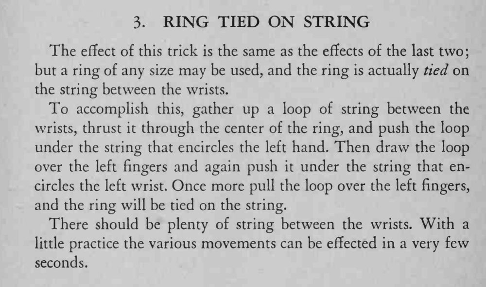

双手被反绑，一只任意大小的戒指却真被系在两腕之间的绳子上，怎么都取不下来。
两腕间要留足绳子，几个动作要练到几秒钟内完成。

The effect of this trick is the same as the effects of the last two; but a ring of any size may be used, and the ring is actually tied on the string between the wrists. To accomplish this, gather up a loop of string between the wrists, thrust it through the center of the ring, and push the loop under the string that encircles the left hand. Then draw the loop over the left fingers and again push it under the string that encircles the left wrist. Once more pull the loop over the left fingers, and the ring will be tied on the string. There should be plenty of string between the wrists. With a little practice the various movements can be effected in a very few seconds.